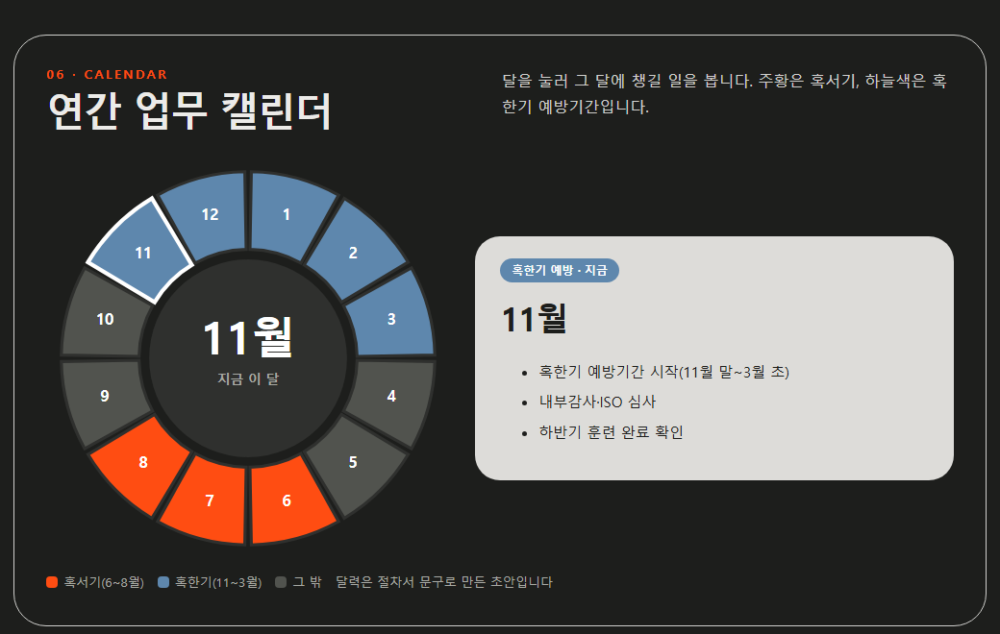
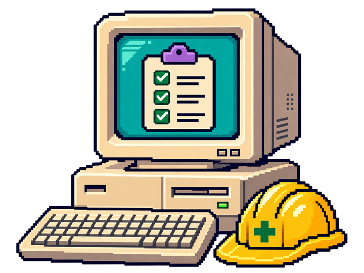

안전관리 실무 교육 플랫폼
안전관리 업무를 처음 맡은 사람이 어떤 서류를 언제 확인해야 하는지 파악할 수 있도록, 안전서류를 업무 흐름에 따라 분류하고 교육·점검·연간 일정과 연결했습니다.
교육 플랫폼 열기

안전관리 업무를 처음 맡은 사람이 어떤 서류를 언제 확인해야 하는지 파악할 수 있도록, 안전서류를 업무 흐름에 따라 분류하고 교육·점검·연간 일정과 연결했습니다.
교육 플랫폼 열기
안전보건 의무 순서에 맞춰 서류를 대분류 15개·중분류 68개로 정리하고, 평소 쓰는 말이나 기존 문서번호로 관련 폴더와 파일을 찾는 검색 도구를 개발했습니다.
PDF 보고서 보기